zbiór danych
AIQ: przegląd badań nad AI (zakładka „Badania”)
Baza WPiA UMCS z opisami badań w trzech językach: m.in. eksperymenty grupy Mollicka (BCG, P&G), badanie z prawnikami patentowymi i prace zespołu Google AI & Economy.
Dziennik · dzielnica 04 / 10 · spotkania II i III
Tatary: Fabryka i Kampus
Fabryka na Tatarach pracuje prawie bez ludzi, a kampus uczy z pomocą AI. Zlecenie: oceń, kto zyskuje, a kto traci.
piątek 6.11.2026, 12:45–14:15 (spotkanie II, część 1: praca) · piątek 20.11.2026, 12:45–14:15 (spotkanie III, część 2: edukacja i kompetencje) · Aula WPiA UMCS
Strzałki lub spacja przewijają slajdy, klawisz F włącza pełny ekran.
Cel modułu. Po zajęciach student potrafi: odróżnić automatyzację od augmentacji pracy; wyjaśnić pojęcie „poszarpanej granicy” technologii na podstawie eksperymentu BCG i Harvard Business School; ocenić, które zadania prawnika są najbardziej podatne na zmianę; wskazać przepisy AI Act, RODO i prawa pracy dotyczące stosowania AI w rekrutacji i edukacji; omówić główne wyniki badania „Algorytm w Ławce Szkolnej”.
Pytanie przewodnie. Czy sztuczna inteligencja zabierze nam pracę i oduczy myślenia, czy raczej zmieni to, za co płaci się prawnikowi i czego powinna uczyć szkoła?
Debata o AI i pracy często zaczyna się od pytania, które zawody znikną. To pytanie jest źle postawione. Zawód to wiązka zadań. Asystent sędziego przygotowuje projekty uzasadnień, sprawdza akta, wyszukuje orzecznictwo, kontaktuje się ze stronami. AI może przejąć jedne zadania, wspomóc inne, a części nie dotknąć wcale. Ekonomiści pracy nazywają to podejściem zadaniowym.
Dlatego odróżniamy dwie sytuacje. Automatyzacja oznacza, że maszyna przejmuje zadanie w całości i człowiek znika z tego etapu procesu. Przykład: automatyczna anonimizacja orzeczeń przed publikacją. Augmentacja oznacza, że maszyna wspiera człowieka, który nadal odpowiada za wynik. Przykład: model przygotowuje projekt pisma, a prawnik go sprawdza i podpisuje.
Najlepiej udokumentowanym badaniem tego zjawiska jest eksperyment przeprowadzony w 2023 r. przez zespół Harvard Business School (F. Dell’Acqua, E. Mollick i in.) z Boston Consulting Group. Wzięło w nim udział 758 konsultantów, którzy wykonywali 18 realistycznych zadań. Część pracowała bez AI, część z modelem GPT-4. W zadaniach mieszczących się w możliwościach modelu konsultanci z AI wykonali średnio o 12,2% więcej zadań, o 25,1% szybciej i z jakością wyższą o ponad 40%. Najwięcej zyskały osoby słabsze: poprawa o 43%, wobec 17% u najlepszych.
Badacze celowo dodali jednak zadanie leżące poza możliwościami modelu. Tam konsultanci z AI rozwiązywali je poprawnie o 19 punktów procentowych rzadziej niż ci bez AI. Model podawał przekonujące, ale błędne odpowiedzi, a ludzie je przyjmowali. Autorzy nazwali to „poszarpaną granicą technologiczną” (jagged technological frontier): zadania podobnie trudne dla człowieka mogą leżeć po różnych stronach granicy. Nikt nie dostaje mapy tej granicy, a każda nowa wersja modelu ją przesuwa.
Mollick opisał dwie strategie pracy z AI. Centaur wyraźnie dzieli pracę: sam decyduje, które zadania oddaje maszynie. Cyborg splata swoją pracę z pracą modelu, iterując zdanie po zdaniu. Obie strategie wymagają weryfikacji.
Drugie badanie, F. Dell’Acqui z udziałem 181 rekruterów, pokazało zjawisko „zasypiania za kierownicą”. Rekruterzy, którzy dostali lepsze rekomendacje AI, oceniali kandydatów mniej dokładnie niż ci ze słabszym narzędziem. Słabsze narzędzie zmuszało do wysiłku. Im lepsza maszyna, tym łatwiej przestajemy myśleć. Dla prawnika to ostrzeżenie: dobry system wyszukiwania orzecznictwa nie zwalnia z czytania orzeczeń.
Grupa Ethana Mollicka (Wharton Generative AI Labs) i jej współpracownicy poszli dalej niż eksperyment BCG. W eksperymencie terenowym w Procter & Gamble (Dell’Acqua, Mollick i in., Organization Science 2026) pojedyncza osoba pracująca z AI osiągała jakość rozwiązań zespołu pracującego bez AI, a zespoły z AI wypadały najlepiej. Badanie nazwano „cybernetycznym kolegą z zespołu”: AI przejmuje część korzyści, które dotąd dawała współpraca ludzi.
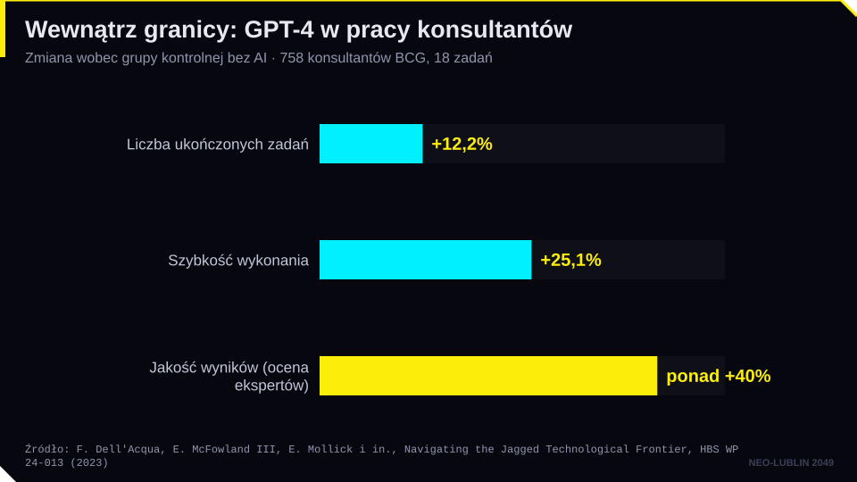
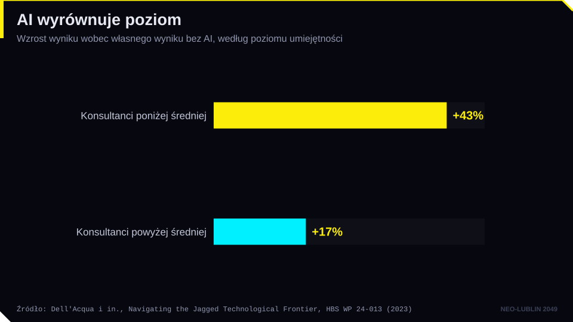
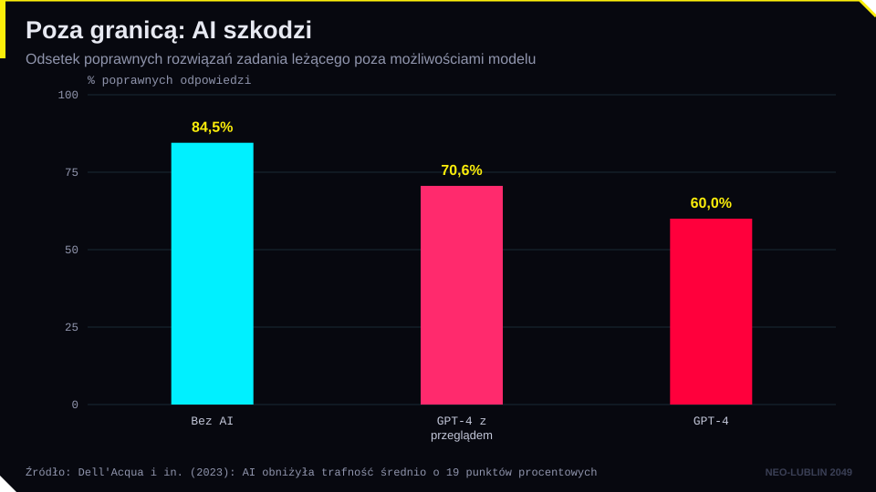
Dla przyszłych prawników szczególnie ważny jest trzymiesięczny eksperyment z 133 prawnikami patentowymi z 11 amerykańskich kancelarii (Autor i in., NBER WP 35720, 2026; badanie przeprowadził i sfinansował Google). Asystent AI podniósł jakość pisania zgłoszeń patentowych, zwłaszcza u młodszych prawników. Gdy jednak wszyscy pracowali później bez AI, przewagę zachowali tylko doświadczeni. Autorzy wnioskują, że podstawowa wiedza fachowa jest warunkiem, by z pracy z AI wynieść trwałą umiejętność.
Zespół Google AI & Economy (m.in. Alex Imas z Google DeepMind, Daniel Rock, Zanna Iscenko) mierzy użycie AI na dużą skalę. Raport ATLAS (2026) przypisał 15 mln interakcji z modelem Gemini do ponad 800 zawodów: AI pojawia się w zawodach obejmujących ok. 88% zatrudnienia w USA, ale jej użycie jest płytkie i głównie wspiera człowieka, a nie go zastępuje. Te same osoby ostrzegają przed pochopnym łączeniem spadku liczby ofert pracy dla młodych z AI, bo spadek zaczął się przed premierą ChatGPT (Iscenko, Curto Millet 2026). Badania firm technologicznych o ich własnych produktach warto czytać obok badań niezależnych. Opisy wszystkich tych prac są w bazie AIQ, zakładka Badania.
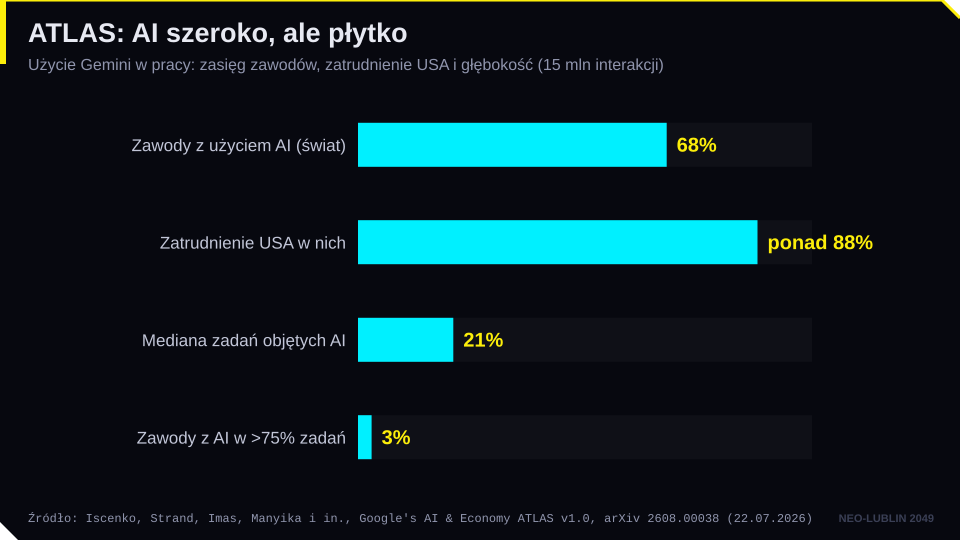
Dane METR z Time Horizon 1.1, na które powołuje się Mollick we wpisie z 20.10.2026 r., pokazują „poszarpaną granicę” w liczbach. Z 228 zadań programistycznych GPT-4 (wersja z listopada 2023 r.) wykonał 98, a Claude Mythos Preview (kwiecień 2026 r.) dodatkowo 110, czyli razem 208; 20 zadań pozostało niewykonanych, prawie wszystkie wymagające od człowieka 2 do 20 godzin, ale wśród nich jest też zadanie trwające 10 minut. Zadania o podobnej trudności dla człowieka leżą więc po obu stronach granicy, a sama granica przesuwa się z każdą nową wersją modelu. Mollick dodaje do centaura i cyborga trzeci tryb pracy, „conjurera”: człowiek zleca zadanie agentom i ocenia to, co zwrócą, co jest najsilniejsze, lecz oznacza utratę kontroli nad tym, co AI robi po drodze.
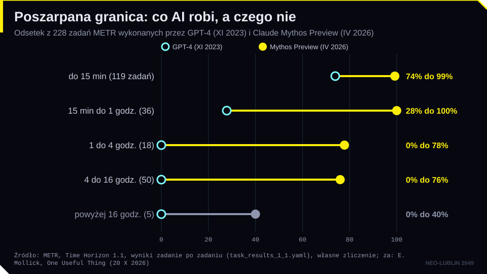
Dane o wpływie AI na rynek pracy są trzech rodzajów i trzeba je odróżniać.
Pierwszy rodzaj to eksperymenty, takie jak badanie BCG. Mierzą rzeczywisty efekt, ale w wąskim wycinku pracy.
Drugi to indeksy ekspozycji. Raport Międzynarodowej Organizacji Pracy i polskiego NASK z maja 2025 r. szacuje, że 25% zatrudnienia na świecie przypada na zawody potencjalnie narażone na AI generatywną, a w krajach wysokodochodowych 34%. Najwyższą kategorię ekspozycji ma 3,3% pracujących. Najbardziej narażone są prace biurowe i administracyjne, częściej wykonywane przez kobiety. Autorzy podkreślają, że ekspozycja zwykle oznacza przekształcenie pracy, nie jej utratę. Ciekawostka: indeks zbudowano na podstawie blisko 30 tys. zadań z polskiej klasyfikacji zawodów.
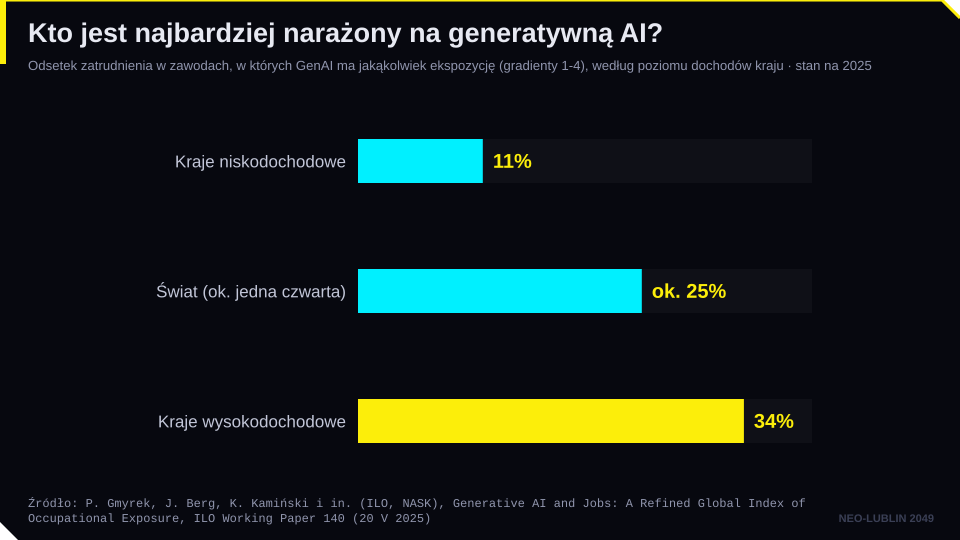
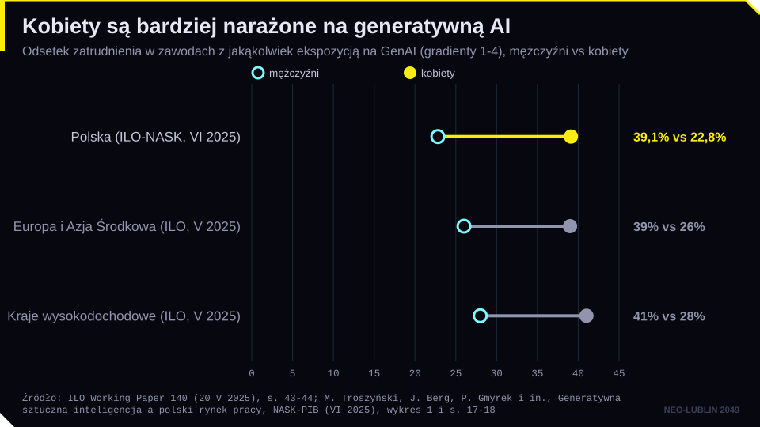
Trzeci to prognozy pracodawców. Według Future of Jobs Report 2025 Światowego Forum Ekonomicznego do 2030 r. powstanie 170 mln miejsc pracy, a 92 mln zniknie (saldo: +78 mln). Te liczby obejmują wszystkie badane trendy, także demograficzne, gospodarcze i klimatyczne; same trendy AI i przetwarzania informacji to według raportu ok. 11 mln nowych i 9 mln likwidowanych miejsc pracy. Ok. 39% kluczowych umiejętności ma się zmienić. To deklaracje menedżerów, nie pomiar.
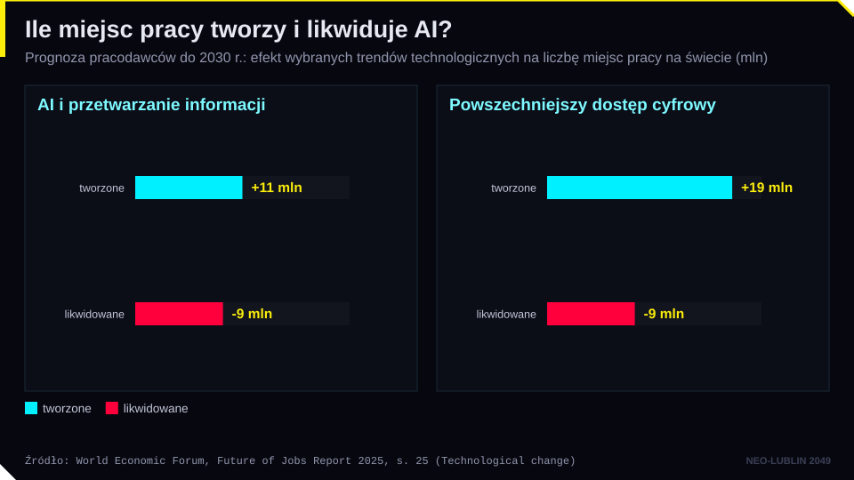
Dla zawodów prawniczych często przytacza się analizę Goldman Sachs z 2023 r.: w USA AI generatywna mogłaby zautomatyzować ok. 44% zadań w pracy prawniczej. To udział zadań, a nie odsetek prawników, którzy stracą pracę. Najbardziej podatne są wyszukiwanie, streszczanie, przegląd dokumentów i pierwsze wersje pism. Najmniej podatne są relacja z klientem, negocjacje, wystąpienia przed sądem i osąd etyczny. Richard i Daniel Susskindowie (Przyszłość zawodów) przewidują nie koniec profesji, lecz zmianę sposobu dostarczania wiedzy eksperckiej.
Szczególnym obszarem jest rekrutacja. Firmy coraz częściej filtrują CV i układają rankingi kandydatów za pomocą AI. Test agencji Bloomberg z 2024 r. pokazał, że GPT-3.5, układając 1000 razy ranking identycznych CV różniących się tylko imieniem i nazwiskiem, wyraźnie rzadziej stawiał na pierwszym miejscu kandydatów z imionami typowymi dla czarnoskórych Amerykanów. Metodę tego testu krytykowano, ale problem jest realny. Mechanizm stronniczości omówimy na spotkaniu 5.
Prawo reaguje na kilku poziomach:
Zmieniają się też zawody językowe. Narzędzia takie jak Rask AI czy ElevenLabs (firma założona przez Polaków, Mateusza Staniszewskiego i Piotra Dąbkowskiego) tłumaczą nagrania i syntetyzują głos. Pojawiają się pytania o ochronę głosu jako dobra osobistego (art. 23 k.c.) i o oznaczanie treści syntetycznych (art. 50 AI Act).
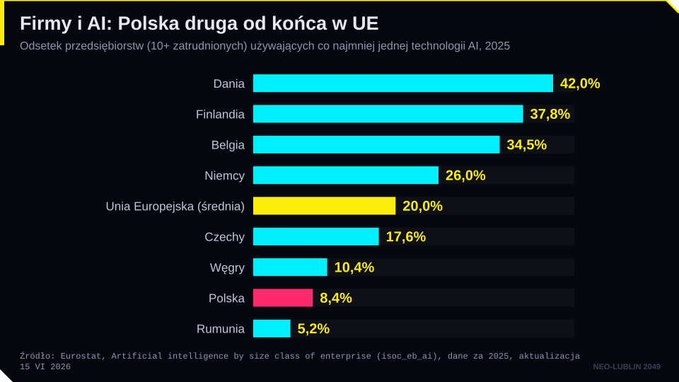
Za „automatyczną” AI stoi praca ludzi. Ktoś musi zebrać dane, opisać je, ocenić odpowiedzi modeli i usuwać drastyczne treści. Dziennikarskie śledztwo tygodnika „TIME” (2023) opisało pracowników w Kenii, którzy dla podwykonawcy OpenAI oznaczali drastyczne treści za mniej niż 2 dolary za godzinę. Astra Taylor nazwała zjawisko przedstawiania ludzkiej pracy jako działania maszyny „fałszomatyzacją” (fauxtomation).
Z tym wiąże się prekaryzacja: zatrudnienie staje się niestabilne i pozbawione zabezpieczeń socjalnych. Krótkie umowy, brak gwarancji zatrudnienia, nieregularny czas pracy, niskie płace i zależność od platformy. Coraz częściej pracą zarządza algorytm: aplikacja przydziela zlecenia, ocenia i „dezaktywuje” konto.
Unia Europejska odpowiedziała dyrektywą (UE) 2024/2831 o poprawie warunków pracy za pośrednictwem platform internetowych. Państwa mają ją wdrożyć do 2.12.2026 r. Dyrektywa wprowadza domniemanie stosunku pracy, gdy fakty wskazują na kierownictwo i kontrolę, oraz pierwsze w prawie UE zasady zarządzania algorytmicznego: obowiązek informowania o systemach monitorowania i podejmowania decyzji, nadzór człowieka, prawo do wyjaśnienia i przeglądu decyzji. Zakazuje też przetwarzania m.in. danych o stanie emocjonalnym pracownika.
Najdalej idącą propozycją jest powszechny dochód podstawowy. Geoffrey Hinton, laureat Nagrody Nobla z fizyki (2024), powiedział BBC w maju 2024 r., że doradzał rządowi brytyjskiemu jego wprowadzenie. Argument: AI zwiększy produktywność, ale zyski trafią do najbogatszych, a nie do tych, którzy stracą pracę. Eksperymenty (Finlandia 2017–2018, OpenResearch w USA) pokazały niewielki wpływ na aktywność zawodową i lepszy dobrostan uczestników. Spór dotyczy jednak nie tylko pieniędzy, ale też sensu pracy i pozycji społecznej.
Ostatni wątek to nierówności. Dostęp do najlepszych modeli kosztuje, modele działają najlepiej po angielsku, a korzyści koncentrują się w kilku państwach i firmach. Powstaje „świat różnych prędkości”.
Edukacja jest obszarem, w którym AI zadomowiła się najszybciej. Salman Khan, założyciel Khan Academy, przekonuje w książce Brave New Words (2024), że AI da każdemu uczniowi osobistego korepetytora. Jego asystent Khanmigo nie podaje gotowej odpowiedzi, tylko zadaje pytania naprowadzające. Projekt Maria (Historical Imagination Lab i Humanverse) to awatar Marii Skłodowskiej-Curie zaprezentowany w Lublinie w 2024 r.: przykład, jak AI może ożywić historię, ale też rodzi pytania o wiarygodność i granice fikcji.
Istnieje też perspektywa krytyczna. Derek Thompson twierdzi, że prawdziwe zagrożenie to nie przewaga AI, lecz to, że przestaniemy używać własnych umysłów. Pisanie nie następuje po myśleniu, pisanie jest myśleniem. Kto oddaje pisanie maszynie, traci pracę zrozumienia. Thompson wskazuje na spadek wyników czytania w USA (najniższe od 32 lat w badaniu NAEP 2024).
Polskie dane przynosi badanie „Algorytm w Ławce Szkolnej” (K. Kasprowicz, H. Busz, Lublin 2026). Przebadano 303 uczniów szkół średnich i studentów z województwa lubelskiego. Najważniejsze wyniki:
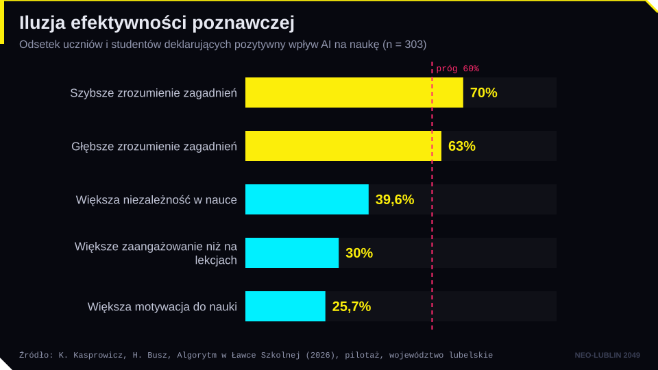
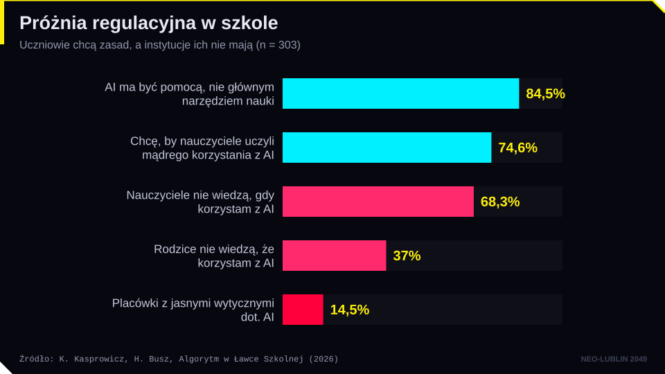
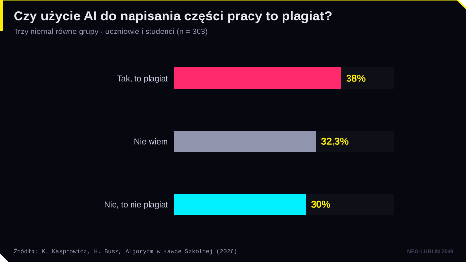
Pełne wyniki są dostępne w interaktywnym raporcie na stronie kursu.
Z prawnego punktu widzenia warto rozróżnić plagiat i nierzetelność akademicką. Art. 115 ust. 1 ustawy o prawie autorskim penalizuje przywłaszczenie autorstwa cudzego utworu. Jeżeli tekst wygenerowany przez model nie jest utworem (brak twórcy-człowieka, por. spotkanie 7), to przypisanie go sobie nie jest plagiatem w tym rozumieniu. Nie oznacza to jednak, że jest dozwolone. Art. 77 ust. 5 ustawy Prawo o szkolnictwie wyższym i nauce pozwala stwierdzić nieważność dyplomu, gdy autor pracy przypisał sobie autorstwo istotnego fragmentu cudzego utworu lub ustalenia naukowego. Szerzej działają regulaminy studiów, kodeksy etyki uczelni i odpowiedzialność dyscyplinarna. Sylabus tego kursu przyjmuje prostą zasadę: AI jest dozwolona przy projekcie, ale student składa oświadczenie, z jakich narzędzi i w jakim zakresie korzystał, i odpowiada za prawdziwość źródeł.
AI Act obejmuje edukację wprost. Systemy AI do decydowania o przyjęciu na studia, oceniania efektów uczenia się, sterowania procesem nauki i wykrywania niedozwolonych zachowań na egzaminach są systemami wysokiego ryzyka (załącznik III pkt 3). Zakazane jest rozpoznawanie emocji uczniów i studentów (art. 5 ust. 1 lit. f). Uczelnia, która wszczyna postępowania dyscyplinarne na podstawie „detektora AI”, stosuje zatem system wysokiego ryzyka o znanej zawodności.
Na decyzje rodzin wpływa też otoczenie. W eksperymentach Bursztyna, Imasa i współautorów (NBER 2025) gotowość rodziców nastolatków do zapłaty za narzędzia AI do nauki rosła o ponad 60%, gdy dowiadywali się, że korzystają z nich inni uczniowie; informacja o szkodach obniżała ocenę AI, ale nie własny popyt, za to zwiększała poparcie dla zakazu AI w szkołach. Ethan i Lilach Mollick proponują w zamian, by nauczyciel świadomie przydzielał AI role na zajęciach (tutor, coach, mentor, kolega z zespołu, narzędzie, symulator, uczeń) i zawsze zostawiał studenta „w pętli” jako osobę, która sprawdza i ocenia wynik.
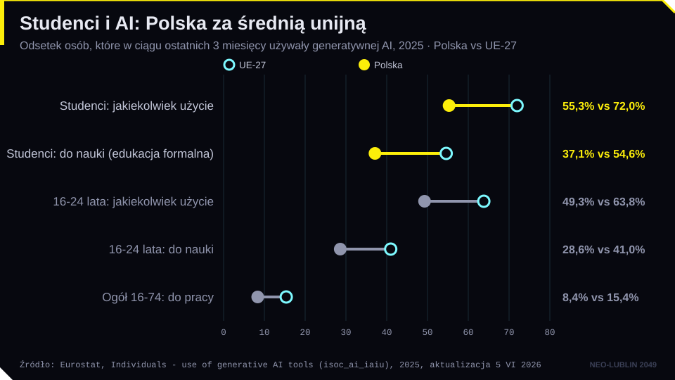
Skoro zmieniają się zadania, muszą się zmieniać kompetencje. Art. 4 AI Act, stosowany od 2.02.2025 r., dotyczy kompetencji w zakresie AI personelu dostawców i podmiotów stosujących. Po zmianach wprowadzonych rozporządzeniem (UE) 2026/1744 przepis mówi o obowiązku wspierania tych kompetencji. W Polsce ustawa z 3.07.2026 r. o systemach sztucznej inteligencji obowiązuje od 11.08.2026 r., a jej przepisy o kontroli i karach od 28.10.2026 r.
Jakie kompetencje są potrzebne prawnikowi? Po pierwsze, weryfikacja: sprawdzanie źródeł, sygnatur i cytatów. Po drugie, lokalizowanie granicy: rozpoznawanie, które zadania leżą wewnątrz możliwości modelu. Po trzecie, rozumienie działania modelu i umiejętność formułowania poleceń. Po czwarte, ochrona tajemnicy zawodowej przy pracy z narzędziami chmurowymi. Po piąte, osąd i odpowiedzialność, których nie da się oddać maszynie. Te kompetencje rozwiniemy na spotkaniu 8.
Cykl Prompting Science Reports (Wharton Generative AI Labs, 2025–2026) sprawdza popularne „sztuczki” w pracy z modelami. Uprzejmość, groźby czy obietnica napiwku nie poprawiały wyników w testach wiedzy, a nadanie modelowi persony eksperta, także prawnika, zwykle nie zwiększało trafności. Raport o ocenianiu prac pokazał, że ukryte w tekście polecenia potrafią zawyżać oceny wystawiane przez AI. Kompetencją prawnika jest więc nie „magiczny prompt”, lecz umiejętność weryfikacji wyniku.
| Pojęcie | Definicja robocza |
|---|---|
| Automatyzacja | Przejęcie zadania przez maszynę w całości, bez udziału człowieka na tym etapie. |
| Augmentacja | Wsparcie człowieka przez maszynę; człowiek nadal odpowiada za wynik. |
| Poszarpana granica technologiczna | Nieregularny zasięg możliwości AI: zadania podobnie trudne dla człowieka mogą leżeć wewnątrz albo poza możliwościami modelu. |
| Centaur / cyborg | Dwie strategie pracy z AI: wyraźny podział zadań albo ścisłe splecenie pracy człowieka i modelu (E. Mollick). |
| „Zasypianie za kierownicą” | Spadek czujności człowieka, gdy narzędzie AI jest bardzo dobre (F. Dell’Acqua). |
| Ekspozycja zawodu | Udział zadań w zawodzie, które AI może wykonać lub wspomóc; nie oznacza utraty pracy. |
| Niewidzialna praca | Ludzka praca przy danych (etykietowanie, moderacja, ocena odpowiedzi), na której opiera się AI. |
| Prekaryzacja | Proces, w którym zatrudnienie staje się niestabilne i pozbawione zabezpieczeń socjalnych. |
| Zarządzanie algorytmiczne | Organizowanie, ocenianie i kontrolowanie pracy przez systemy zautomatyzowane (dyrektywa 2024/2831). |
| Dochód podstawowy | Regularne świadczenie pieniężne dla każdego obywatela, niezależne od pracy. |
| Iluzja efektywności poznawczej | Mylenie szybszego dostępu do odpowiedzi z głębszym zrozumieniem. |
| Kompetencje w zakresie AI | Umiejętności i wiedza pozwalające świadomie korzystać z AI i rozumieć jej ryzyka (art. 4 i art. 3 pkt 56 AI Act). |
Stan prawny i dane liczbowe sprawdzono 19.10.2026 i uzupełniono 22.10.2026 w źródłach pierwotnych, m.in. w raportach MOP, NASK i WEF, danych Eurostatu, pracy NBER WP 32719 o eksperymencie z dochodem podstawowym i zarządzeniu Rektora UMCS nr 27/2024 o AI w pracach dyplomowych. Polska transpozycja dyrektywy 2024/2831 o pracy platformowej jest na etapie projektu (stan na 22.10.2026).
zbiór danych
Baza WPiA UMCS z opisami badań w trzech językach: m.in. eksperymenty grupy Mollicka (BCG, P&G), badanie z prawnikami patentowymi i prace zespołu Google AI & Economy.
strona
Mollick przekonuje, że problem AI w szkole to nie tylko ściąganie (było powszechne wcześniej), ale zmiana sensu zadań domowych, i wzywa do jasnych zasad użycia AI. Student zobaczy, jak sformułowano problem uczciwości akademickiej w pierwszym roku po ChatGPT.
strona
Pracownicy używają AI po cichu, bo nie chcą ujawniać, że to robią, więc organizacje nie widzą własnych innowacji i ryzyk. Autor opisuje też, że firmy zakazują ChatGPT z niejasnych względów prawnych, więc tekst jest tłem dla polityki korzystania z AI w kancelarii i dla tajemnicy zawodowej.
strona
Krytyczny komentarz do badania „Your Brain on ChatGPT” (MIT Media Lab): AI nie szkodzi mózgowi, ale nieprzemyślane użycie osłabia myślenie. Zasada „najpierw myśl, najpierw pisz” pasuje do dyskusji o iluzji efektywności poznawczej i nauce prawa.
strona
Wykład dla pierwszego roku prawa i administracji: nierówna (postrzępiona) granica możliwości AI, AI w sądach (Pakistan, Shenzhen, PLLuM w Prokuratorii Generalnej), podział pracy na decyzję, przygotowanie i weryfikację, halucynowane orzeczenia w polskich sprawach (NSA), eksperyment z rzecznikami patentowymi (NBER). Dobry punkt wyjścia o wpływie AI na pracę prawnika i naukę zawodu.
strona
Tekstowe streszczenie wykładu i lista 31 źródeł z linkami (Dell'Acqua, Remus i Levy, Snell v. United Specialty, raport UN A/80/169, NBER, rozstrzygnięcia NSA, baza Charlotina). Przydatne jako gotowa lektura uzupełniająca do modułów o pracy, sądach i odpowiedzialności.
strona
Warsztat o współpracy człowiek-AI: jagged frontier Mollicka, alfabetyzm AI (skrypty deterministyczne a modele probabilistyczne), trzy pytania przed użyciem AI, pięć prototypów na bazie raportu A/80/169, wnioski z nauczania 16 specjalistów.
wideo
Klasyczny esej wideo o automatyzacji pracy. Dziś ciekawe jest sprawdzanie, co się sprawdziło, a co nie.
książka
Trzecie wydanie. Krótki przewodnik dla studentów prawa po zawodzie, który się zmienia.
książka
Automatyzacja pracy umysłowej i jej skutki dla płac i nierówności. Wydanie polskie MT Biznes.
książka
Niewidzialna praca ludzi, którzy etykietują dane i poprawiają modele.
podcast
Regularne, krótkie teksty o AI w pracy i edukacji, oparte na badaniach autora.
Polecenie. Wybierz zagadnienie z prawa cywilnego, które znasz z zajęć (np. przedawnienie roszczeń, wady oświadczenia woli). Poproś model generatywny (ChatGPT, Claude, Gemini, Bielik lub inny) o:
Następnie zamknij czat i bez zaglądania do niego zapisz w trzech zdaniach, czego się nauczyłeś.
Co obserwujemy.
Pytania do refleksji.
Stan faktyczny. Spółka „Lex-Kadry” sp. z o.o. z Lublina prowadzi rekrutację na 20 stanowisk asystentów prawnych. Otrzymała 900 zgłoszeń. Kupiła system AI, który analizuje CV i nagrania krótkich rozmów wideo. System nadaje każdemu kandydatowi wynik od 0 do 100 i ocenia jego „entuzjazm” na podstawie mimiki. Kandydaci z wynikiem poniżej 60 otrzymują automatycznie e-mail z odmową. Nikt w dziale kadr nie przegląda odrzuconych zgłoszeń. Po zakończeniu rekrutacji okazuje się, że system odrzucił 85% kandydatek powyżej 45. roku życia, wobec 50% wszystkich kandydatów. Pani Anna (lat 52), doświadczona sekretarka sądowa, żąda wyjaśnienia, dlaczego ją odrzucono.
Pytania.
Quiz samosprawdzający. Najlepszy wynik zapisuje się tylko w tej przeglądarce (karta wyników na stronie głównej) i liczy się do aktywności; nic nie jest wysyłane. Pytania z quizu nie pojawiają się na teście zaliczeniowym.
Badanie 303 uczniów szkół średnich i studentów: wzorce korzystania z AI, paradoks rozumienia, etyka akademicka, rola nauczyciela.